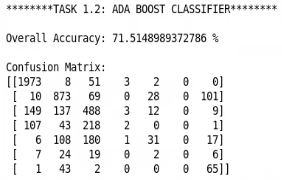
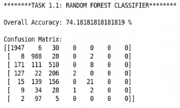
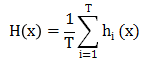
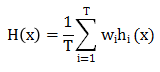
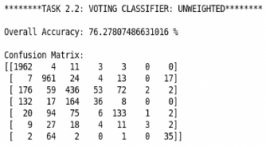
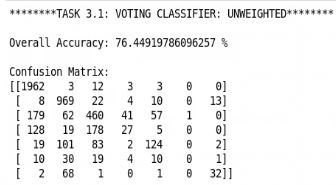

基于集成学习的心电图诊断识别
一 、模型集成
集成学习先产生一组“个体学习器”，再用某种策略将它们结合起来。个体学习器通常由一个现有的学习算法从训练数据中产生。若集成中只包含同种类型的个体学习器，这样的集成是“同质”的，同质集成中的个体学习器称为“基学习器”。集成也可包含不同类型的个体学习器，这样的集成是“异质”的。异质集成中的个体学习器由不同的学习算法生成，这时就不再有基学习算法；相应的，个体学习器一般不称为基学习器，常称为“组件学习器”或直接称为个体学习器。
集成学习通过将多个学习器进行结合，常可获得比单一学习器显著优越的泛化性能。这对“弱学习器”尤为明显，因此集成学习的很多理论研究都是针对弱学习器进行的。在一般经验中，如果把好坏不等的东西掺到一起，那么通常结果会是比最坏的要好一些，比最好的要坏一些。集成学习把多个学习器结合起来，想要获得比最好的单一学习器更好的性能。
根据个体学习器的生成方式，目前的集成学习方法大致可分为两大类，即个体学习器间存在强依赖关系、必须串行生成的序列化方法，以及个体学习器间不存在强依赖关系、可同时生成的并行化方法。前者的代表是Boosting，后者的代表是Bagging和Random Forest。
基于ESBclassifier.py实现心电图诊断识别，文件目录/root/ecgpy/
注意：$ 符号是系统提示符，不用输入！
打开桌面版的terminal，输入代码如下，并执行:
#打开文件路径$cd /root/ecgpy#运行jupyter notebook$jupyter-notebook --allow-root
新建python文档，输入以下代码并执行：
#导入所需包import numpy as npimport pandas as pdimport timefrom sklearn import svmfrom sklearn.tree import DecisionTreeClassifierfrom sklearn.ensemble import RandomForestClassifier, AdaBoostClassifierfrom sklearn.naive_bayes import GaussianNB, MultinomialNB, BernoulliNBfrom sklearn.linear_model import LogisticRegressionfrom sklearn.neighbors import KNeighborsClassifierfrom sklearn.neural_network import MLPClassifierfrom sklearn.ensemble import VotingClassifierfrom sklearn.metrics import confusion_matriximport random#exec time: STARTstart_time=time.time()#数据预处理############# Data generation and Preprocessing ###############def load_data(fea_file):"""Extract ecg data from txt file, divide data into training set and test set, separate feature list and labels.:param fea_file: the path of the file to be loaded:return train_labels, train_data, test_labels, test_data: list objects"""train_labels = []train_data = []test_labels = []test_data = []file = open(fea_file, 'r')line = file.readline()while line:temp = line.split(";")temp_fea = temp[2].split(",")r = random.randint(0, 9)if r > 1:train_data.append(temp_fea)train_labels.append(temp[1])else:test_data.append(temp_fea)test_labels.append(temp[1])line = file.readline()file.close()train_data = np.array(train_data)train_data = train_data.astype(float)train_labels = np.array(train_labels)train_labels = train_labels.astype(np.int64)test_data = np.array(test_data)test_data = test_data.astype(float)test_labels = np.array(test_labels)test_labels = test_labels.astype(np.int64)return train_data, train_labels, test_data, test_labelsdata_file = '/root/ecgpy/NewCombined.txt'trainData_x, trainData_y, testData_x, testData_y = load_data(data_file)confusionMatrix = np.zeros((2, 2))#Logistic Regression Classifierprint("****Logistic Regression**** \n")LR=LogisticRegression(penalty='l2', dual=False, tol=0.00001, C=1.0, fit_intercept=True, intercept_scaling=1, class_weight=None, random_state=200, solver='liblinear', max_iter=100, multi_class='ovr')LR.fit(trainData_x,trainData_y)predict=LR.predict(testData_x)score=LR.score(testData_x,testData_y)S='Overall Accuracy: ' +repr(score*100)+' %'+'\n'print(S)confusionMatrix=confusion_matrix(testData_y,predict)print('Confusion Matrix: ')print(confusionMatrix)print('\n')print("****Decision Tree**** \n")DT = DecisionTreeClassifier(max_depth=3,min_samples_leaf=1)DT.fit(trainData_x,trainData_y)predict=DT.predict(testData_x)score=DT.score(testData_x,testData_y)S='Overall Accuracy: ' +repr(score*100)+' %'+'\n'print(S)confusionMatrix=confusion_matrix(testData_y,predict)print('Confusion Matrix: ')print(confusionMatrix)print('\n')#Support Vector Machine Classifierprint("****SVM**** \n")SVM1=svm.SVC(decision_function_shape='ovr')SVM1.fit(trainData_x,trainData_y)predict=SVM1.predict(testData_x)score=SVM1.score(testData_x,testData_y)S='Overall Accuracy: ' +repr(score*100)+' %'+'\n'print(S)confusionMatrix=confusion_matrix(testData_y,predict)print('Confusion Matrix: ')print(confusionMatrix)print('\n')print("****Naive Bayes**** \n")NB=BernoulliNB ()NB.fit(trainData_x,trainData_y)predict=NB.predict(testData_x)score=NB.score(testData_x,testData_y)S='Overall Accuracy: ' +repr(score*100)+' %'+'\n'print(S)confusionMatrix=confusion_matrix(testData_y,predict)print('Confusion Matrix: ')print(confusionMatrix)print('\n')#Neural Network Classifierprint("****Neural Network**** \n")NN=MLPClassifier(activation='logistic',solver='lbfgs',hidden_layer_sizes=(10,2),momentum = 0.9, learning_rate='constant', learning_rate_init=0.001, early_stopping=True, random_state=200)NN.fit(trainData_x,trainData_y)predict=NN.predict(testData_x)score=NN.score(testData_x,testData_y)S='Overall Accuracy: ' +repr(score*100)+' %'+'\n'print(S)confusionMatrix=confusion_matrix(testData_y,predict)print('Confusion Matrix: ')print(confusionMatrix)print('\n')#K-Nearest Neighbors Classifierprint("****K-nearest neighbors**** \n")KNN=KNeighborsClassifier(n_neighbors=2,weights="uniform")KNN.fit(trainData_x,trainData_y)predict=KNN.predict(testData_x)score=KNN.score(testData_x,testData_y)S='Overall Accuracy: ' +repr(score*100)+' %'+'\n'print(S)confusionMatrix=confusion_matrix(testData_y,predict)print('Confusion Matrix: ')print(confusionMatrix)print('\n')
1.Boosting
Boosting是一族可将弱学习器提升为强学习器的算法，这族算法的工作机制类似：先从初始训练集训练出一个基学习器，再根据基学习器的表现对训练样本分布进行调整，使得先前基学习器做错的训练样本再后续收到更多关注，然后基于调整后的样本分布来训练下一个基学习器。如此重复进行，直至基学习器数目达到事先指定的值T，最终将这T个基学习器进行加权结合。Boosting族算法最著名的代表是AdaBoost：
#AdaBoost Classifierprint("********TASK 1.1: ADA BOOST CLASSIFIER******** \n")AB=AdaBoostClassifier(DecisionTreeClassifier(max_depth=1,min_samples_leaf=1),n_estimators=11,learning_rate=1.1,random_state=200)AB.fit(trainData_x,trainData_y)predict=AB.predict(testData_x)score=AB.score(testData_x,testData_y)S='Overall Accuracy: ' +repr(score*100)+' %'+'\n'print(S)confusionMatrix=confusion_matrix(testData_y,predict)print('Confusion Matrix: ')print(confusionMatrix)print('\n')
运行结果如图：

框架参数：
base_estimator：
即我们的弱分类学习器理论上可以选择任何一个分类或者回归学习器，不过需要支持样本权重。我们常用的一般是CART决策树或者神经网络MLP。默认是决策树
algorithm：
这个参数只有AdaBoostClassifier有。主要原因是scikit-learn实现了两种Adaboost分类算法，SAMME和SAMME.R。两者的主要区别是弱学习器权重的度量，SAMME用对样本集分类效果作为弱学习器权重，而SAMME.R使用了对样本集分类的预测概率大小来作为弱学习器权重。
n_estimators：
就是我们的弱学习器的最大迭代次数，或者说最大的弱学习器的个数。一般来说n_estimators太小，容易欠拟合，n_estimators太大，又容易过拟合，一般选择一个适中的数值。默认是50。在实际调参的过程中，我们常常将n_estimators和下面介绍的参数learning_rate一起考虑。
learning_rate:
即每个弱学习器的权重缩减系数ν，加上了正则化项，我们的强学习器的迭代公式为fk(x)=fk−1(x)+ναkGk(x)。ν的取值范围为0<ν≤1。对于同样的训练集拟合效果，较小的ν意味着我们需要更多的弱学习器的迭代次数。通常我们用步长和迭代最大次数一起来决定算法的拟合效果。所以这两个参数n_estimators和learning_rate要一起调参。一般来说，可以从一个小一点的ν开始调参，默认是1。
2.Bagging与Random Forest
想得到泛化能力强的集成，集成中的个体学习器应尽可能相互独立。虽然“独立”在现实任务中无法做到，但可以设法使基学习器尽可能具有较大的差异。一种可能的做法是对训练样本进行采样，产生出若干个不同的子集，再从每个数据子集中训练出一个基学习器。这样，由于训练数据不同，我们获得的基学习器可以具有比较大的差异。
Bagging是并行式集成学习方法最著名的代表。给定包含m个样本的数据集，我们先随机选出一个样本放入采样集中，再把该样本放回初始数据集，使得下次采样时该样本仍有可能被选中，这样，经过m次随机采样操作，我们得到含m个样本的样本集。我们可采样出T个含m个训练样本的采样集，然后基于每个采样集训练出一个基学习器，再将这些基学习器进行结合。这就是Bagging的基本流程。在对预测输出进行结合时，Bagging通常对分类任务使用简单投票法，对回归任务使用简单平均法。
随机森林（Random Forest）是Bagging的一个扩展变体。在以决策树为基学习器构建Bagging集成的基础上，进一步在决策树的训练过程中引入了随机属性选择。具体地，传统决策树在选择划分属性时是在当前节点的属性集合中选择一个最优属性；而在RF中，对基决策树的每个结点，先从该结点的属性集合中随机选择一个包含k个属性的子集，然后再从这个子集中选择一个最优属性用于划分。随机森林简单，容易实现，计算开销小，令人惊奇的是，它在很多现实任务中展现出强大的性能，被誉为“代表集成学习技术水平的方法”。值得一提的是，随机森林的训练效率常常优于Bagging。因为在个体决策树的构建过程中，Bagging使用的是“确定型”决策树，在选择划分属性时要对结点的所有属性进行考察，而随机森林使用的“随机型”决策树则只需考察一个属性子集。
#Random forest classifierprint("********TASK 1.2: RANDOM FOREST CLASSIFIER******** \n")RF = RandomForestClassifier(max_depth=4, n_estimators=10,random_state=200)RF.fit(trainData_x,trainData_y)predict=RF.predict(testData_x)score=RF.score(testData_x,testData_y)S='Overall Accuracy: ' +repr(score*100)+' %'+'\n'print(S)confusionMatrix=confusion_matrix(testData_y,predict)print('Confusion Matrix: ')print(confusionMatrix)print('\n')
运行结果如图：

3.结合策略
学习器结合可能会从三个方面带来好处：1、从统计的方面来看，由于学习任务的假设空间往往很大，可能有多个假设在训练集上达到同等性能，此时若使用单学习器可能因误选而导致泛化性能不佳，结合多个学习器则会减少这一风险。2、从计算的方面来看，学习算法往往会陷入局部极小，有的局部极小点所对应的泛化性能可能很糟糕，而通过多次运行之后进行结合，可降低陷入糟糕局部极小点的风险。3、从表示的方面来看，某些学习任务的真实假设可能不在当前学习算法所考虑的假设空间中，此时若使用单学习器则肯定无效，而通过结合多个学习器，由于相应的假设空间有所扩大，有可能学得更好的近似。
集成包含T个基学习器的策略有如下几种：
(1)平均法
对数值型输出常用结合策略是使用平均法
简单平均法：
加权平均法：要求权重非负且和为1

一般，个体学习器性能相差较大时使用加权平均，性能相近时使用简单平均法（例：可以用测试集准确率判断性能）。
(2)投票法
对分类任务来说，学习器将从类别标记集合中预测出一个标记，最常见的结合策略是使用投票法。
绝对多数投票法：若某标记得票过半，则预测为该标记；否则拒绝预测。（在可靠性要求较高的学习任务中很有效）
相对多数投票法：预测为得票最多的标记，若同时有多个标记获得最高票，则从中随机选取一个。
不同类型个体学习器可能产生不同类型的输出值：使用类标记的投票称“硬投票”；使用类概率的投票称“软投票”，相当于对后验概率的一个估计。基学习器类型不同，其类概率值不能直接进行比较，通常将类概率输出转化为类标记输出（例：将类概率输出最大设为1，其他设为0）然后再投票。
(3)学习法
当训练数据很多时，一种更为强大的结合策略是使用“学习法”，即通过另一个学习器来进行结合。Stacking是典型代表，个体学习器称为初级学习器，用于结合的学习器称为次级学习器或元学习器。基本思想：先从初始数据集训练出初级学习器，然后将初始学习器的输出作为特征（一般采用留一法或交叉验证法，使用训练初级学习器未使用到的样本来产生次级学习器的样本）与相对应的初始训练集的标记组合为新的数据集用于训练次级学习器。
print("********TASK 2.1: VOTING CLASSIFIER: UNWEIGHTED******** \n")VCU=VotingClassifier(estimators=[('gnb',NB),('lr',LR),('dt',DT),('knn',KNN),('mlp',NN)], voting = 'soft')VCU.fit(trainData_x,trainData_y)predict=VCU.predict(testData_x)score=VCU.score(testData_x,testData_y)S='Overall Accuracy: ' +repr(score*100)+' %'+'\n'print(S)confusionMatrix=confusion_matrix(testData_y,predict)print('Confusion Matrix: ')print(confusionMatrix)print('\n')
运行结果如图：

#Unweighted Majority Voting Classifier including Random Forest and AdaBoostprint("********TASK 3.1: VOTING CLASSIFIER: UNWEIGHTED******** \n")VCU2=VotingClassifier(estimators=[('gnb',NB),('lr',LR),('dt',DT),('knn',KNN),('mlp',NN),('rf',RF),('ab',AB)], voting = 'soft')VCU2.fit(trainData_x,trainData_y)predict=VCU2.predict(testData_x)score=VCU2.score(testData_x,testData_y)S='Overall Accuracy: ' +repr(score*100)+' %'+'\n'print(S)confusionMatrix=confusion_matrix(testData_y,predict)print('Confusion Matrix: ')print(confusionMatrix)print('\n')
运行结果如图：

二 、小结
该实验针对不同“个体学习器”，采用不同策略结合，进行心电数据诊断识别。
 暂无视频
暂无视频

给实验评分
: